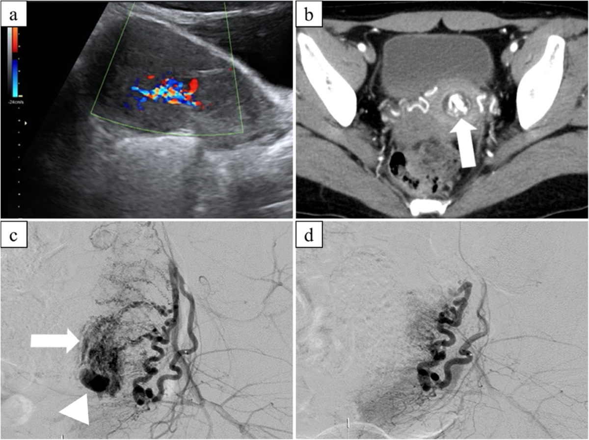
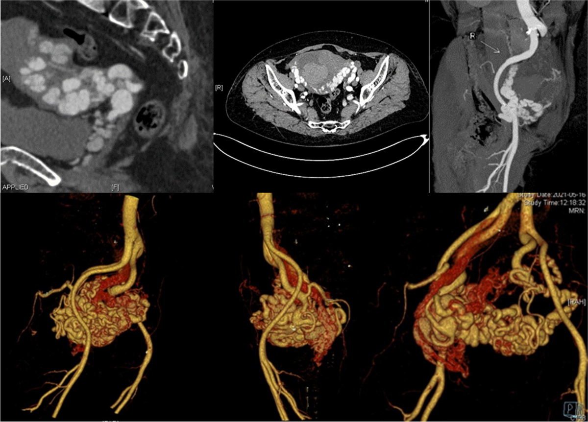

1931 — Thai kỳ sau nút mạch tử cung (UAE): tư vấn sinh sản, nhau cài răng lược và dự phòng băng huyết tái phát / Pregnancy after uterine artery embolization
Tags: pattern:chay-mau pattern:gia-phinh pattern:thai-ky pattern:nguy-co-tai-phat pattern:bat-thuong-nhau vung:tu-cung vung:thai vung:tu-cung-phan-phu score:PAS protocol:SA-Doppler protocol:CTA protocol:MRI-chau
Mức chắc chắn (certainty): tổng hợp y văn (literature synthesis) — ghép 1 phân tích gộp 23 nghiên cứu (Matsuzaki S et al., Sci Rep 2021, PMC8377070, CC BY 4.0), 1 nghiên cứu bệnh–chứng (Jitsumori M et al., Int J Womens Health 2020, PMC7064279, CC BY-NC 4.0), 1 tổng quan hệ thống 371 ca AVM (Ruiz Labarta FJ et al., J Pers Med 2022, PMC9324499, CC BY 4.0), 1 đoàn hệ dự trữ buồng trứng (Mohr-Sasson A et al., PLoS One 2018, PMC6264507, CC BY 4.0), 1 loạt 14 ca nút mạch bằng bọt gelatin (Kimura Y et al., CVIR Endovasc 2020, PMC7016069, CC BY 4.0) và dữ liệu liệt kê (Descargues 2004; Zhang 2021). Số nào nguồn không đưa thì ghi "chưa rõ".
Bài này trả lời 4 câu hỏi sau một ca nút mạch tử cung (uterine artery embolization, UAE): (1) Bệnh nhân còn khả năng có thai không, dự trữ buồng trứng mất bao nhiêu? (2) Thai kỳ sau UAE nguy hiểm vì bệnh gì — con số cụ thể? (3) Theo dõi thai thế nào, đẻ ở đâu, đẻ đường nào? (4) Khi nào băng huyết tái phát và xử trí ra sao? Đây là phần sau can thiệp của 1723 – Giả phình động mạch tử cung; phần chẩn đoán – cấp cứu băng huyết ở 1728; phần nhau cài răng lược ở 560.
1. Tổng quan bệnh học – cơ chế hình ảnh
1.1 Nút mạch tử cung "làm gì" trong tử cung
- Động mạch tử cung xuất phát từ động mạch chậu trong, đi trong dây chằng rộng, chia nhánh bó mạch hướng lên (thân tử cung) và hướng xuống (cổ tử cung, âm đạo). Tử cung có hai nguồn máu nối tiếp: động mạch tử cung và động mạch buồng trứng (từ động mạch chủ bụng) — nối với nhau qua vòi trứng và mạc treo buồng trứng. Đây là lý do có thai vẫn được sau UAE: khi một nguồn bị bít, nguồn còn lại và tuần hoàn bàng hệ vẫn nuôi được nội mạc.
- Kỹ thuật: chọn nhánh động mạch tử cung, bơm hạt gelatin 500–1.000 µm (hoặc PVA, microcoil, keo) tới khi ứ dòng (stasis) ở đoạn xa. Hạt kẹt ở tiểu động mạch < 1 mm, gây huyết khối tại chỗ; bọt gelatin tiêu đi trong vài tuần, mạch có thể tái thông — khác coil (bít vĩnh viễn) dùng cho túi giả phình/AVM.
- Hiệu quả cấp cứu (Zhang 2021, 43 nghiên cứu): thành công kỹ thuật 99,3%, thành công lâm sàng 90,5%; biến chứng hay gặp là hội chứng sau nút mạch và rối loạn kinh nguyệt.
1.2 TẠI SAO tử cung sau UAE lại sinh nhau cài răng lược
- UAE gây thiếu máu cục bộ nội mạc – cơ tử cung. Vùng cơ bị hoại tử vi thể được thay bằng mô xơ, nội mạc mất lớp xốp đủ dày để màng rụng hóa (decidualization) bình thường. Khi có thai, gai nhau gặp vùng màng rụng khiếm khuyết sẽ bám sâu vào cơ — đó là phổ nhau cài răng lược (placenta accreta spectrum, PAS).
- Con số phải thuộc (Matsuzaki 2021, 23 nghiên cứu, 483 thai sau UAE):
- PAS 16,3% (34/208); băng huyết sau sinh (postpartum hemorrhage, PPH) 24,0% (115/480); cắt tử cung 6,5% (28/432).
- So với thai phụ có tiền sử PPH nhưng không UAE: PAS OR 20,82 (KTC 95% 3,27–132,41), PPH OR 5,32 (1,40–20,16); cắt tử cung, nhau tiền đạo, sinh non, chậm phát triển trong tử cung đều không đạt ý nghĩa (OR 8,93; 2,31; 3,00; 7,22 — KTC rất rộng).
- Jitsumori 2020 (16 thai sau UAE so với 3.139 thai không UAE): PAS 37,5% so với 1,2% (OR 50,3; KTC 17,38–145,59); sinh non 12,5% so với 14,2% và chậm phát triển 6,2% so với 10,0% — không khác biệt. Nghĩa là: rủi ro chính là nhau bám sâu và chảy máu, không phải sinh non.
- TẠI SAO PAS nhiều mà sinh non không tăng: tổn thương UAE khu trú ở nội mạc – cơ, không phá hủy toàn bộ thể tích tử cung; thai vẫn lớn bình thường, nhưng bánh nhau bám vào chỗ xơ nên khi bong sẽ chảy máu ồ ạt.
1.3 TẠI SAO dự trữ buồng trứng giảm nhưng vẫn có thai
- Buồng trứng được nuôi một phần bởi nhánh động mạch tử cung qua nối với động mạch buồng trứng; nút hai bên có thể làm giảm tưới máu vỏ buồng trứng.
- Mohr-Sasson 2018 (21 nữ sau mổ lấy thai bảo tồn + UAE hai bên vì nhau bám sâu, so với 40 đối chứng cùng tuổi): AMH 0,8 ng/mL (IQR 0,44–1,80) so với 2,08 (1,68–3,71), p = 0,001; FSH và estradiol không khác biệt (p = 0,396 và p = 0,665). Điểm cốt lõi: AMH là dấu hiệu nhạy nhất, còn FSH bình thường không loại trừ giảm dự trữ — sai lầm hay gặp khi tư vấn.
- Khả năng sinh sản vẫn được bảo tồn: Descargues 2004 (25 nữ sau UAE vì băng huyết sản khoa) — 100% có kinh trở lại; 5/9 người muốn có thai đã có thai, 10 thai kỳ, không ca nào băng huyết tái phát, cân nặng trẻ 3.220–4.100 g. Kimura 2020 (14 ca nút mạch vì sản phẩm thai lưu tăng sinh mạch): 6 thai kỳ trung bình 29 tháng sau UAE, không biến chứng nặng.
1.4 Cơ chế hình ảnh: vì sao "xoáy màu", vì sao "tĩnh mạch về sớm"
- Túi giả phình (pseudoaneurysm, PSA): thành mạch bị rách, máu phụt vào mô quanh mạch tạo túi không có cả ba lớp thành. Trên siêu âm Doppler màu, máu vào túi thì tâm thu và ra thì tâm trương theo hai hướng ngược nhau → dấu "yin-yang" (xoáy hai màu). Phổ xung tại cổ túi có tốc độ đỉnh cao — ca minh họa của Mou 2014 đo 215 cm/s trong động mạch nuôi (Hình 1).
- Dị dạng động – tĩnh mạch tử cung (uterine arteriovenous malformation, AVM): có thông trực tiếp giữa tiểu động mạch và tiểu tĩnh mạch, thiếu giường mao mạch → trở kháng thấp, tốc độ cao, và tĩnh mạch tử cung hiện sớm ngay thì động mạch. Trên CTA/3D, thấy chùm mạch ngoằn ngoèo, phình dạng "u" cục bộ (Hình 2: nhánh trái phình 1,8 × 1,6 cm, tĩnh mạch trái về sớm).
- MRI: mạch tốc độ cao tạo khoảng trống tín hiệu dòng chảy (flow void) trên T1 và T2 — tức là đen trên mọi chuỗi, vì proton đã chạy khỏi lát cắt trước khi phát tín hiệu.
- Sau UAE: mục tiêu là mất tín hiệu Doppler trong túi/ổ dị dạng; trên DSA là không còn ngấm thuốc ở nhánh đã nút (Hình 1d).
2. Mẫu hình + chẩn đoán phân biệt theo vị trí (Gamut)
Bài này có hai gamut riêng, phải tách rõ:
2.1 Gamut A — "khối mạch máu trong tử cung" sau sinh/sảy (lý do phải nút mạch)
- PSA sau mổ lấy thai/nạo/gãy xương chậu: khối giảm âm trong cơ tử cung + xoáy màu, có cổ túi nối động mạch tử cung; hay gặp ở đoạn dưới – sẹo mổ.
- AVM tử cung: chùm mạch ngoằn ngoèo lan tỏa trong cơ, tĩnh mạch về sớm, không có "cổ túi" đơn độc; thường sau nạo/hút, có thể bẩm sinh.
- Sản phẩm thai lưu tăng sinh mạch (hypervascular retained products of conception, RPOC): khối trong buồng tử cung, có thể rất giàu mạch — bắt chước AVM trên Doppler. Đây là cạm bẫy chết người (xem mục 5).
- Thai lưu/ thai ngoài tử cung/ bệnh nguyên bào nuôi (gestational trophoblastic disease): hình ảnh hỗn hợp, β-hCG cao; β-hCG không phân biệt được RPOC với AVM (Batra 2025).
- Dị dạng động – tĩnh mạch bẩm sinh / thai trong sẹo mổ lấy thai: bối cảnh lâm sàng quyết định.
2.2 Gamut B — "thai kỳ sau UAE" (bệnh gì sẽ gặp)
- Thai bình thường (đa số): không có triệu chứng, siêu âm bình thường.
- PAS — 16,3%, nguy cơ cao nhất ở UAE hai bên + tiền sử mổ lấy thai/nạo.
- PPH tái phát — 24,0%; cơ chế: tử cung xơ + giảm co bóp vùng nút mạch + nhau bám sâu.
- Cắt tử cung — 6,5%; thường là hệ quả của PAS/PPH không cầm được, không phải biến chứng độc lập của UAE.
- Sinh non, chậm phát triển, nhau tiền đạo: không tăng có ý nghĩa trong phân tích gộp (Jitsumori; Matsuzaki) — đừng dọa bệnh nhân bằng những rủi ro chưa có bằng chứng.
- AVM tái phát sau UAE: 0 ca trong 77 thai kỳ của tổng quan 371 ca (Ruiz Labarta 2022) — tin tốt để tư vấn.
3. Bảng so sánh phân biệt (ma trận đối chiếu)
| Thực thể (entity) | Hình ảnh điển hình | Chốt vào (rule-in) | Chốt loại (rule-out) | Gợi ý xác nhận |
|---|---|---|---|---|
| PSA động mạch tử cung | Khối giảm âm trong cơ + xoáy màu yin-yang, có cổ túi; phổ xung tốc độ cao (215 cm/s trong ca minh họa) | Xoáy hai màu + cổ túi nối động mạch tử cung + tiền sử nạo/mổ lấy thai | Không có cổ túi, mạch lan tỏa kiểu chùm → nghĩ AVM | Doppler màu + phổ xung; CTA/DSA khi cần can thiệp |
| AVM tử cung | Chùm mạch ngoằn ngoèo trong cơ, tĩnh mạch về sớm thì động mạch, trở kháng thấp | Tĩnh mạch tử cung hiện sớm trên CTA/DSA + chùm mạch lan tỏa | Có cổ túi đơn độc + phổ "to-and-fro" → PSA | CTA/MRA; DSA là chuẩn vàng |
| RPOC tăng sinh mạch | Khối trong buồng tử cung, có thể rất giàu mạch; β-hCG không giúp phân biệt | Khối trong lòng tử cung + tiền sử sảy/đẻ non + β-hCG còn dương | Không có tĩnh mạch về sớm, không có chùm mạch trong cơ → không phải AVM | Siêu âm + nội soi buồng tử cung có IR dự phòng; tránh nạo mù |
| Thai sau UAE không biến chứng | Thai đúng vị trí, bánh nhau bám mặt sau/thân, không lacuna | Thai phát triển phù hợp tuổi, Doppler rốn – tử cung bình thường | Lacuna, mất dải sáng, mạch máu xuyên cơ → chuyển PAS | Siêu âm 6–8 tuần; 18–22 và 28–32 tuần |
| PAS sau UAE | Lacuna ("swiss cheese"), mất dải sáng sau bánh nhau, cơ mỏng < 1 mm, mạch máu xuyên qua cơ tới bàng quang | Lacuna + mất dải sáng + tiền sử UAE/mổ lấy thai | Bánh nhau bám mặt sau, cơ dày đều → nguy cơ thấp | Siêu âm chuyên gia; MRI khi siêu âm không kết luận |
| PPH tái phát | Không có hình ảnh đặc hiệu trước sinh; chảy máu sau bong nhau | Tiền sử UAE vì PPH + chảy máu > 500 mL (đẻ đường âm đạo) / > 1.000 mL (mổ lấy thai) | Chảy máu do rách cổ tử cung/âm đạo, nhau sót → xử trí khác | Cân máu, xét nghiệm đông máu, siêu âm kiểm tra nhau sót |
Ảnh minh họa 1 — trước và sau nút mạch (Kimura 2020, Fig 2, CC BY 4.0):

*Bệnh nhân 32 tuổi chảy máu sau nạo vì thai lưu: (a) siêu âm khối tăng sinh mạch trong buồng tử cung; (b) CT thì động mạch có ổ ngấm thuốc; (c) DSA động mạch tử cung trái — blush khu trú (mũi tên) và túi giả phình (đầu mũi tên); (d) sau nút mạch, ổ ngấm thuốc biến mất. Nguồn: Kimura Y et al., CVIR Endovasc 2020, PMC7016069, CC BY 4.0.*
Ảnh minh họa 2 — AVM tử cung (BMC Womens Health 2024, Fig 2, CC BY-NC-ND 4.0):

CTA: động mạch tử cung hai bên giãn, ngoằn ngoèo, bên trái có phình dạng "u" cục bộ ~1,8 × 1,6 cm; tĩnh mạch tử cung trái hiện sớm ngay thì động mạch → chốt AVM. Nguồn: BMC Womens Health 2024, PMC11438250, CC BY-NC-ND 4.0 (ảnh nguyên bản, không chỉnh sửa).
4. Protocol chụp + hệ phân độ/điểm chuẩn hóa
4.1 Trước khi có thai (tư vấn sau UAE)
- Không chụp lại định kỳ nếu không triệu chứng. Nếu còn ra máu bất thường: siêu âm đầu dò âm đạo + Doppler màu là bước 1; mục tiêu là không còn dòng chảy trong túi/ổ dị dạng.
- Dự trữ buồng trứng: đo AMH (và FSH/estradiol nếu cần) ở nữ < 40 tuổi có mong con — vì FSH bình thường không loại trừ giảm dự trữ (Mohr-Sasson 2018).
- Tư vấn có số: PAS 16,3%, PPH 24,0%, cắt tử cung 6,5%; nhưng đa số vẫn có thai và sinh con khỏe mạnh, kinh nguyệt trở lại 100%.
- Thời điểm có thai lại: chưa có khuyến cáo chính thức dựa trên bằng chứng; các loạt ca ghi nhận thai từ 2 tháng đến 5 năm sau UAE (Ruiz Labarta 2022), và 6/14 ca có thai trung bình 29 tháng sau nút mạch vì RPOC (Kimura 2020). Thực hành hợp lý: chờ ≥ 3–6 tháng để tử cung hồi phục và hoàn tất đánh giá, nhưng không được nói "phải chờ 1 năm" như một chân lý — đó là suy luận, không phải dữ liệu.
- Bổ sung sắt/acid folic, kiểm tra huyết sắc tố trước khi mang thai; nữ có tiền sử PPH nên sinh tại cơ sở có ngân hàng máu và IR.
4.2 Theo dõi thai kỳ
- 6–8 tuần: siêu âm xác định thai trong tử cung, số thai, tim thai; ghi vị trí bánh nhau và sẹo mổ lấy thai cũ (nếu có).
- 18–22 tuần: siêu âm hình thái + tầm soát PAS (lacuna, mất dải sáng, cơ < 1 mm, mạch xuyên cơ). Nếu nghi ngờ → MRI bổ sung và chuyển trung tâm sản – non.
- 28–32 tuần: siêu âm tăng trưởng + đánh giá lại bánh nhau; đo Doppler rốn/tử cung nếu thai nhỏ.
- Không có chỉ định mổ lấy thai chỉ vì tiền sử UAE. Mổ lấy thai khi có PAS, nhau tiền đạo, sẹo tử cung có chỉ định hoặc chỉ định sản khoa khác — đây là suy luận từ dữ liệu (không có thử nghiệm ngẫu nhiên).
- PAS nghi ngờ: mổ lấy thai chủ động 34–36 tuần tại trung tâm có đội mổ – IR – ngân hàng máu, có kế hoạch cắt tử cung bảo tồn hay không (xem 560).
4.3 Xử trí khi băng huyết tái phát
- Bước 1: gọi hỗ trợ, đo mạch/huyết áp, truyền máu theo tỷ lệ, acid tranexamic 1 g tĩnh mạch trong vòng 3 giờ đầu (WOMAN 2017; WHO 2017).
- Bước 2: oxytocin + misoprostol/carboprost, xoa đáy tử cung, bóng chèn (Bakri).
- Bước 3: nút mạch tử cung lặp lại hoặc thắt động mạch tử cung/chậu trong; nếu thất bại → cắt tử cung.
- Lưu ý kỹ thuật: sau UAE lần đầu, tử cung có thể được nuôi bù qua động mạch buồng trứng — lần nút thứ hai phải chụp cả động mạch buồng trứng để không sót nguồn chảy; nút buồng trứng hai bên có nguy cơ suy buồng trứng, chỉ làm khi cứu mạng.
flowchart TD
A[Thai phụ có tiền sử UAE] --> B[Siêu âm 6-8 tuần: thai trong tử cung + vị trí bánh nhau]
B --> C{18-22 tuần: lacuna, mất dải sáng, cơ dưới 1 mm?}
C -->|Không| D[Theo dõi thai bình thường]
C -->|Có| E[MRI + chuyển trung tâm PAS]
D --> F[28-32 tuần: đánh giá lại bánh nhau + tăng trưởng]
E --> G[Mổ lấy thai chủ động 34-36 tuần + đội IR/ngân hàng máu]
F --> H{Chuyển dạ}
H --> I[Đẻ đường âm đạo nếu không có chỉ định mổ]
I --> J[Xử trí tích cực thì 3: oxytocin + TXA nếu chảy máu]
G --> K[Sinh tại trung tâm có IR; sẵn sàng bóng chèn/nút mạch/cắt tử cung]
J --> L{Chảy máu trên 500 mL?}
L -->|Có| M[Bóng chèn - nút mạch lặp lại - phẫu thuật]
L -->|Không| N[Theo dõi 24 giờ]
4.4 Hệ phân độ liên quan
- PAS: phân độ FIGO 2018/2020 (accreta – increta – percreta) dựa trên độ sâu xâm lấn cơ và cấu trúc lân cận; không có RADS riêng cho UAE.
- PPH: phân độ theo lượng máu mất và đáp ứng điều trị (nhẹ: < 1.000 mL và đáp ứng thuốc; nặng: ≥ 1.000 mL, cần truyền máu, can thiệp hoặc có dấu hiệu sốc).
- AVM/PSA: không có điểm chuẩn hóa; quyết định dựa trên có chảy máu hoạt động + vị trí + mong con.
5. Biến thể bình thường và cạm bẫy
- RPOC tăng sinh mạch bị gọi nhầm là AVM — cạm bẫy số 1. Cả hai đều "giàu mạch" trên Doppler. Khác biệt: RPOC nằm trong lòng tử cung, không có tĩnh mạch về sớm, và β-hCG không giúp phân biệt. Nạo mù trong AVM có thể gây chảy máu ồ ạt; nội soi buồng tử cung nên có IR dự phòng (Batra 2025).
- PSA nhỏ có thể tự hết. Không phải mọi túi giả phình đều phải nút ngay: mất dòng tâm trương trên phổ xung gợi ý túi đang giảm tưới máu và có thể tự tiêu (Baba 2018, túi 24 mm). Nhưng PSA có chảy máu, tăng kích thước, hoặc trong thai kỳ → nút mạch (Ugwumadu 2018: nút mạch ở 28 tuần, thai không bị ảnh hưởng).
- "FSH bình thường = buồng trứng bình thường" — sai. AMH giảm rõ trong khi FSH/E2 bình thường (Mohr-Sasson 2018); phải đo AMH khi tư vấn.
- "UAE = vô sinh" — sai. Kinh nguyệt trở lại 100%; 20,7% bệnh nhân AVM sau UAE có thai lại (77/371), 77% không biến chứng.
- Bánh nhau "bình thường" trên siêu âm 20 tuần không loại trừ PAS — PAS có thể tiến triển khi tử cung to ra; phải đánh giá lại ở 28–32 tuần, nhất là khi bánh nhau mặt trước – đoạn dưới.
- Cạm bẫy mặt cắt: khối mạch trong tử cung không được chọc sinh thiết mù; không đặt dụng cụ vào buồng tử cung khi nghi AVM trước khi có CTA/DSA.
6. Tự lượng giá — Blind Quiz
Ca 1 — 32 tuổi, chảy máu âm đạo sau nạo vì thai lưu. Nhìn 4 ô ảnh, mô tả trước khi mở đáp án.
- Gợi ý: bệnh nhân muốn có thai lại; đang ra máu, huyết động ổn.
- Câu hỏi: (1) Ổ bất thường nằm ở đâu? (2) Ô (c) có hai dấu hiệu gì? (3) Vì sao không nạo lại? (4) Sau nút mạch, tư vấn gì về thai kỳ sau?
Bấm để hiện đáp án (findings + chẩn đoán)
- (a) Khối tăng sinh mạch trong buồng tử cung trên siêu âm; (b) ổ ngấm thuốc trên CT thì động mạch.
- (c) DSA động mạch tử cung trái: blush khu trú (mũi tên) + túi giả phình (đầu mũi tên); (d) sau nút mạch không còn ngấm thuốc.
- Chẩn đoán: PSA/RPOC tăng sinh mạch sau nạo — đã nút mạch thành công.
- Không nạo lại vì có thể mở thông túi giả phình/AVM → chảy máu không cầm; nếu cần lấy tổ chức, làm nội soi có IR dự phòng.
- Tư vấn: có thể có thai lại; PAS 16,3%, PPH 24,0%; theo dõi bánh nhau 18–22 và 28–32 tuần; sinh tại nơi có ngân hàng máu/IR.
- Nguồn: Kimura Y et al., CVIR Endovasc 2020, PMC7016069, CC BY 4.0.
Ca 2 — 28 tuổi, ra máu tái diễn sau hút thai; siêu âm thấy "chùm mạch" trong cơ tử cung. CTA dưới đây:
- Câu hỏi: (1) Đây là PSA hay AVM? (2) Dấu hiệu nào trên CTA chốt? (3) Vì sao không nạo? (4) Điều trị và tư vấn sinh sản?
Bấm để hiện đáp án
- AVM tử cung: động mạch tử cung giãn, ngoằn ngoèo, bên trái phình dạng u ~1,8 × 1,6 cm, tĩnh mạch trái về sớm thì động mạch.
- Chốt: tĩnh mạch về sớm + chùm mạch lan tỏa không có cổ túi đơn độc.
- Không nạo: nạo trong AVM có thể gây băng huyết nặng; ưu tiên UAE (thành công chung 88,4%, lần đầu 79,2%) hoặc phẫu thuật bảo tồn khi thất bại.
- Tư vấn: 77/371 (20,7%) có thai lại; 77% không biến chứng; không ca AVM tái phát trong 77 thai kỳ; khoảng cách 2 tháng – 5 năm.
- Nguồn: BMC Womens Health 2024, PMC11438250, CC BY-NC-ND 4.0; số liệu: Ruiz Labarta 2022, PMC9324499, CC BY 4.0.
Ca 3 — 34 tuổi, tiền sử UAE hai bên vì băng huyết sau sinh, hiện thai 20 tuần. Siêu âm: bánh nhau mặt trước, có lacuna, cơ mỏng 0,8 mm.
- Câu hỏi: (1) Chẩn đoán nghĩ đến? (2) Cần làm thêm gì? (3) Kế hoạch sinh? (4) Nếu bệnh nhân hỏi "có phải vì nút mạch mà tôi bị vậy không?" — trả lời thế nào?
Bấm để hiện đáp án
- Nghi PAS (lacuna + cơ 0,8 mm < 1 mm + bánh nhau mặt trước).
- Làm thêm: MRI bánh nhau; chuyển trung tâm sản – non có IR/ngân hàng máu; đánh giá lại 28–32 tuần.
- Kế hoạch: mổ lấy thai chủ động 34–36 tuần, đội mổ – IR – gây mê sẵn sàng, bàn về bảo tồn tử cung vs cắt tử cung.
- Trả lời: UAE là yếu tố nguy cơ đã được chứng minh (PAS 16,3%, OR 20,82 so với người có PPH không UAE), không phải lỗi của bệnh nhân; đây là biến chứng đã biết, và phần lớn vẫn sinh được con khỏe mạnh.
- Nguồn: Matsuzaki 2021, PMC8377070, CC BY 4.0.
Bài liên quan chéo
- 1723 – Giả phình động mạch tử cung — chẩn đoán PSA, dấu yin-yang, chỉ định nút mạch.
- 1657 – Dị dạng động–tĩnh mạch tử cung — phân biệt AVM với tăng sinh mạch cơ tử cung, ngưỡng PSV/RI.
- 1728 – Chảy máu sau vỡ tử cung — xử trí băng huyết cấp, bóng chèn, nút mạch, cắt tử cung.
- 560 – Nhau cài răng lược — tiêu chuẩn hình ảnh PAS, kế hoạch sinh.
- 1726 – Thai kỳ sau vỡ tử cung — đánh giá sẹo và thời điểm mổ.
- 1717 – Vỡ tử cung trên sẹo mổ lấy thai — bối cảnh sẹo tử cung.
- 920 – Nút mạch cầm máu tiêu hóa — nguyên lý nút mạch, vật liệu và biến chứng.
Ảnh
images/1931_thai-sau-uae_DSA-truoc-sau_PMC7016069.png— 4 ô (siêu âm, CT, DSA trước/sau nút mạch); Kimura Y et al., CVIR Endovasc 2020, PMC7016069, CC BY 4.0.images/1931_avm-tu-cung_CTA_PMC11438250.png— CTA + dựng 3D AVM tử cung; BMC Womens Health 2024, PMC11438250, CC BY-NC-ND 4.0 (nguyên bản, không chỉnh sửa).- Nguồn và giấy phép từng ảnh:
images/CREDITS.md; liên kết gốc:sources.md.
Không dùng để chẩn đoán độc lập khi chưa có người hướng dẫn.